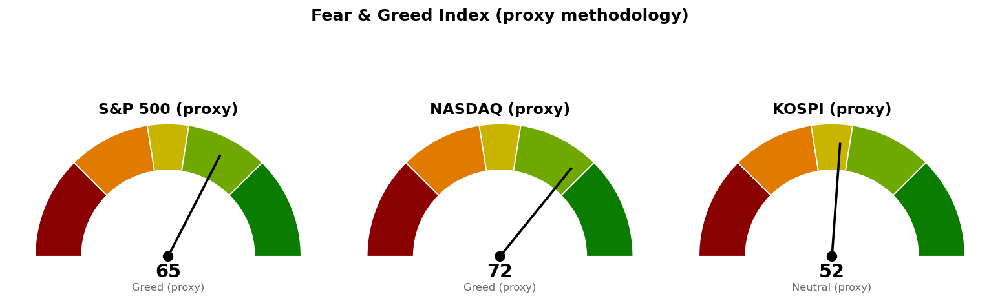

| 직전에 건 조건 | 판정 | 근거 |
|---|---|---|
| 나스닥 기준선 27,344 (종가 상회) | 미충족 | 10/2 종가 27,191 · 고가 27,354 |
| 나스닥 다음 지지 · 사다리 1차 26,680 | 미충족 | 10/2 저가 27,112 |
| S&P 500 기준선 7,794 (종가 상회) | 미충족 | 10/2 종가 7,723 · 고가 7,755 |
| S&P 500 다음 지지 7,596 · 사다리 2차 7,578 | 미충족 | 10/2 저가 7,701 |
| 코스피 기준선 7,054 (종가 상회) | 미충족 | 10/2 종가 7,004 · 고가 7,011 |
| 코스피 다음 지지 6,830 (종가 하회) | 미충족 | 10/2 저가 6,928 |
| 세 지수 취소선 · 30년 금리 5.286% | 미충족 | 어느 지수도 닿지 않음 · 30년 금리 10/2 종가 5.630% |
직전 브리핑이 "다음 세션에 볼 것"으로 적은 나스닥 10월 2일 종가는 27,191로 27,344 아래였습니다. 장중 고가 27,354는 9/22 고점 27,289와 27,400 라운드 사이에서 멈췄고, 직전 기준선을 그 구간 위로 옮긴 판단이 맞았습니다. 하방 갈래로 들어간 지수는 없어 "못 지키면 어디까지"는 이번에도 시험받지 않았습니다.
정정 한 가지 — 직전 브리핑은 코스피 10월 2일 마감을 6,983(+0.17%)으로 적었으나, 시세 제공처가 확정한 종가는 7,004(+0.46%)입니다. 직전 값은 시간별 거래 자료의 마지막 체결가로 채운 것이었습니다. 7,054 미충족 · 6,830 미충족 판정은 바뀌지 않습니다. 미국장은 10월 2일 이후 열리지 않았고, 코스피는 10월 5일 거래 자료가 없어 마지막 봉이 10월 2일입니다. 가격이 새로 시험받지 않았으므로 세 지수의 모든 가격은 직전과 같습니다.
20일선·50일선은 지수이동평균(최근 가격에 무게를 더 둔 평균)입니다. 세 지수 모두 10월 2일 종가 기준입니다.
기준선 27,344는 한 세션 안에 닿는 거리입니다. 90일 박스 상단 27,118 위에서 마쳤지만 박스 안 저점은 낮아지는 중이고 박스 내부 판정은 중립입니다.
기준선 7,794는 하루 변동폭의 1.05배 거리로, 10월 2일 고가 7,755는 9/22 고점 7,782 아래에서 멈췄습니다.
코스피 기준선 7,054는 한 세션 안에 닿는 거리입니다. 코스피의 다음 거래일 시가는 10월 5일(미국) 뉴욕 종가가 먼저 정하므로 코스피 계획은 미국장 결과에 종속됩니다. 세 지수가 서로 다른 방향을 가리키지는 않지만, 10년·30년 금리가 고용 부진 뒤에도 올라 마쳐 경로를 말할 근거가 없으므로 이번에도 방향을 말하지 않고 기준선과 두 갈래만 냅니다. 세 지수 회차를 전부 집행하면 계좌의 16%(22,319,744원), 모두 취소선에서 멈추면 계좌 -0.23%(-318,663원)이며 갭으로 취소선을 건너뛰면 손실은 더 커집니다.
| 지수 | 값 | 등락 | 시가 | 고가 | 저가 |
|---|---|---|---|---|---|
| 나스닥 종합 (10/2 종가) | 27,191 | +1.19% | 27,217 | 27,354 | 27,112 |
| S&P 500 (10/2 종가) | 7,723 | +0.73% | 7,726 | 7,755 | 7,701 |
| 코스피 (10/2 종가) | 7,004 | +0.46% | 6,938 | 7,011 | 6,928 |
| 니케이 225 (10/5 장중) | 70,038 | +2.53% | 69,114 | 70,072 | 69,050 |
니케이의 전일 종가는 이번 조회에서 68,309로, 직전 브리핑이 적은 10/2 마감 68,190과 다릅니다(직전 값은 시간별 거래 자료로 채운 값).
미국 주도섹터는 20일 기준 기술 하나이며 직전과 거의 같습니다. 10월 2일 하루로는 임의소비재(+1.13%)·기술(+1.01%)이 가장 강했고 헬스케어(-0.01%)가 가장 약했습니다.
한국 섹터는 테마형 ETF 기준이라 미국 업종 ETF와 성격이 다릅니다. 지수 확정 종가가 올라가면서 초과수익이 직전보다 조금씩 낮아졌고, 지수를 이기는 곳은 반도체·AI전력기기·인터넷 셋이나 뒤의 둘은 +1% 안쪽입니다. 이번 브리핑에서는 종목 발굴을 돌리지 않았습니다.
| 항목 | 값 | 직전 대비 |
|---|---|---|
| 미국 경기선행지수 (2026년 8월) | 100.96 | 7월 100.89 대비 +0.06 · 직전과 같은 값 |
| 한국 경기선행지수 (2026년 8월) | 102.87 | 7월 102.81 대비 +0.06 · 직전과 같은 값 |
| 미 10년 명목금리 | 5.24% (10/1 확정) · 10/2 종가 지수 시세 5.277% | 확정치 9/30 5.29% 대비 -0.05%포인트 · 시세 +0.040%포인트 |
| 미 10년 기대물가 | 2.36% (10/2) | 10/1 2.36%와 같음 |
| 미 10년 실질금리 | 2.88% (10/1) | 9/30 2.93% 대비 -0.05%포인트 |
| 유가 (WTI) | 확정치 96.16달러 (9/29) · 선물 90.19달러 (10/4 저녁 거래) | 확정치 새 값 없음 · 선물 10/2 정산 91.11달러 대비 -1.01% |
| 달러지수 (광의) | 120.33 (9/25) | 새 값 없음 |
| 변동성지수 (VIX) | 15.31 (10/2 종가) | 전일 16.39 대비 -6.59% · 백분위 33.3 (직전 39.6) |
경기선행지수는 장기 평균을 100으로 놓고 경기 방향을 몇 달 앞서 보여주는 지표(OECD 작성)이며, 새 발표가 없어 해석도 직전과 같습니다. 10월 1일 명목금리 -0.05%포인트는 기대물가가 그대로인 채 실질금리가 같은 폭 내려간 것입니다. 10월 2일에는 고용 부진에도 10년 시세가 5.277%, 30년이 5.630%로 올라 마쳤으며, 이 날의 실질금리 확정치는 아직 없습니다. 금·장기채 가격은 조회하지 않아 실질금리와의 일치 여부는 판정하지 않았습니다. 유가 선물이 10/2 정산 대비 내렸는데 기대물가는 2.36%에 붙어 있습니다.
1. 이번 주 9월 FOMC 의사록 공개 (MarketWatch) 연준 위원들이 추가 인상을 어떻게 봤는지가 나옵니다. 30년 금리 5.630%가 신규 종목 편입 재개 조건 5.286%에서 0.344%포인트 위에 있어, 금리 방향을 바꿀 수 있는 이번 주 일정은 이것입니다. 정확한 공개 날짜는 경제지표 일정 조회에 없어 적지 않습니다.
2. 미 국채 금리 5% 위 — 재정 부담 논쟁 (CNBC) 10년 금리가 5%를 넘은 상태가 이어지며 차입 비용이 재정 악순환을 부를지 논쟁이 붙었습니다. 10월 2일 고용이 예상을 밑돌았는데도 금리가 오른 것과 같은 맥락이며, 나스닥이 27,344 앞에서 멈춘 날의 금리 배경입니다.
3. 트럼프, 한국에 알래스카 LNG 참여 압박 (CNBC) 참여하지 않으면 관세를 더 물리겠다는 발언입니다. 코스피가 기준선 7,054 바로 아래(10/2 종가 7,004)에서 멈춘 채 10월 5일 거래 자료가 없는 상태라, 다음 거래일 시가에 미국장 결과와 함께 반영될 수 있는 한국 고유 변수입니다.
279건을 받아 10건을 추렸고, 나머지 7건은 일본 기업의 중국 철수·일본 장수기업 폐업·영란은행 동결·유가 하락(G7 비축분 방출, 직전 브리핑에서 다룸)·북해 송유관 파업 투표·개인 칼럼 등 지수 기준선 판단과 관계가 약해 뺐습니다.

세 점수 모두 공식 CNN Fear & Greed 지수가 아니라 모멘텀·상대강도·변동성·안전자산 선호 네 항목으로 계산한 대용 지표입니다. 변동성 항목은 자기 과거 3년 분포에서의 자리로 산출하며, 미국은 변동성지수 15.3이 백분위 33.3(756일), 코스피는 내재변동성 지수가 없어 20일 실현변동성 연율화 28.8%가 백분위 67.9(710일)입니다. 네 항목은 나스닥 67.3 · 62.1 · 66.7 · 89.4, S&P 500 61.2 · 54.8 · 66.7 · 76.4, 코스피 45.5 · 54.8 · 32.1 · 78.9입니다. 코스피는 안전자산 선호 항목(60.6 → 78.9)과 변동성 항목(27.8 → 32.1)이 올라 점수가 높아졌습니다.
| 날짜 (한국시간) | 이벤트 | 확인할 것 |
|---|---|---|
| 10월 6일 05:00 | 뉴욕 마감 (미국 10/5) | 나스닥 27,344 · S&P 500 7,794 종가 상회 여부 · 30년 금리 종가 |
| 다음 코스피 거래일 | 코스피 마감 | 7,054 종가 회복 · 6,830 위 유지 |
| 이번 주 (날짜 미확인) | 9월 FOMC 의사록 | 추가 인상 논의와 장기 금리 |
| 10월 8일 (미국) | 신규 실업수당 청구 | 고용 부진이 이어지는지 |
| 10월 14일 (미국) | CPI | 물가 지표와 금리 |
| 10월 28일 (미국) | FOMC | 금리 결정 |
| 10월 29일 (미국) | PCE 물가 · GDP | 물가와 성장 |
미국 일정은 경제지표 일정 조회(30일 범위)로 확인했습니다. FOMC 의사록과 다음 코스피 거래일 날짜는 이번 조회 범위에 없어 적지 않았습니다.
장부 보유 16종목, 매도 기록 없음(직전과 같음). 계좌 평가액 139,498,400원(9월 21일 등록값). 국면은 S&P 500 200일 이동평균 7,226 대비 +6.88%, 코스피 6,325 대비 +10.73%(둘 다 10/2 종가)로 두 시장 모두 신규 진입이 가능한 국면입니다.
1. 매수 쪽 — 지금 가격에 살 자리는 세 지수 모두 없습니다. S&P 500 1차 7,653(계좌의 3%, 4,184,952원)은 9월 30일에 닿았는데 장부에 매수 기록이 없습니다. 매수했으면 수량·단가·날짜를 알려 주십시오. 다음 회차는 S&P 500 2차 7,578 · 나스닥 1차 26,680 · 코스피 1차 6,673의 장중 터치입니다. 2. 나스닥 27,344 · S&P 500 7,794 · 코스피 7,054를 종가로 넘어도 그 가격에서 추격 매수하지 않습니다. 다음 브리핑이 도착지(28,068 · 7,833 · 7,199)까지의 새 계획으로 다시 잡습니다. 3. TQQQ (TQQQ) 50주는 별도 종목 리포트의 기준 가격으로 판정되며 이 브리핑의 나스닥 계획과 무관합니다. 10월 2일 그 리포트의 목표에 닿아 미집행 매도 신호가 새로 1회 생겼습니다. 4. 신규 종목 편입은 30년 금리가 종가로 5.286% 아래일 때 재개합니다(10/2 종가 5.630%). 5. 직전 브리핑 이후 미집행 매도 신호가 새로 셋 쌓였습니다 — TQQQ 10/2 목표, GE Vernova (GEV) 10/2 집행 손절, Netflix (NFLX) 10/2 폐기선. 체결 기록이 없는 신호는 USA Rare Earth (USAR) 8회 · Netflix (NFLX) 5회 · GE Vernova (GEV) 3회 · AMD (AMD) · 현대해상 (001450.KS) · 한화손해보험 (000370.KS) 각 2회 · MP Materials (MP) · Alibaba (BABA) · TQQQ 각 1회이고, 장기 보유로 둔 Fluence Energy (FLNC) 6회 · LightPath (LPTH) 2회는 기록만 쌓입니다. 매도했으면 수량·단가·날짜를 알려 주십시오. 사실을 적을 뿐 매도를 권하는 것이 아닙니다.
다음 세션에 볼 것 하나 — 10월 6일 05:00 나스닥 종가가 27,344 위인지입니다.
ATR(하루 평균 변동폭): 최근 14일 동안 하루에 오르내린 폭의 평균. · EMA(지수이동평균): 최근 가격에 더 무게를 준 평균 가격선이며 20일선·50일선은 이 방식입니다. · RSI(상대강도지수): 최근 14일 오른 폭과 내린 폭의 비율을 0~100으로 나타낸 값. · 확장선: 직전 상승 폭을 위로 연장해 계산한 가격. · 20일 초과수익: 최근 20거래일 수익률에서 기준 지수 수익률을 뺀 값. · VIX(변동성지수): S&P 500 옵션에 반영된 향후 30일 예상 변동폭. · FOMC: 미국 연준의 금리 결정 회의. · CPI: 소비자물가지수. · PCE: 개인소비지출 물가지수. · 기대물가: 명목금리와 물가연동채 금리의 차이로 시장이 보는 평균 물가상승률. · 실질금리: 물가연동국채가 직접 주는 금리.
이 문서는 참고 정보이며 투자자문이 아닙니다. 투자 판단과 그 결과에 대한 책임은 투자자 본인에게 있습니다.